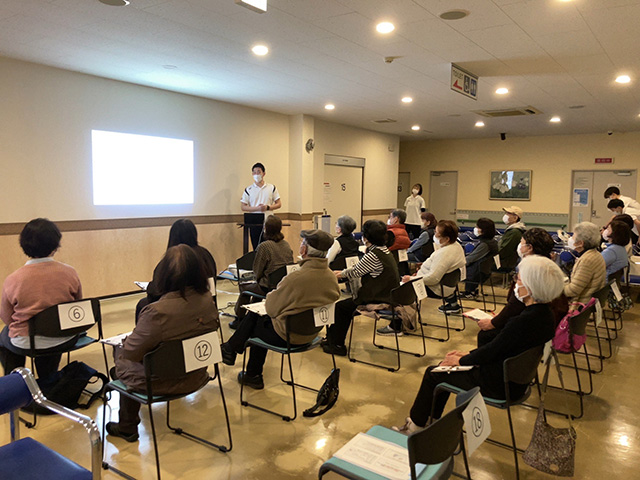
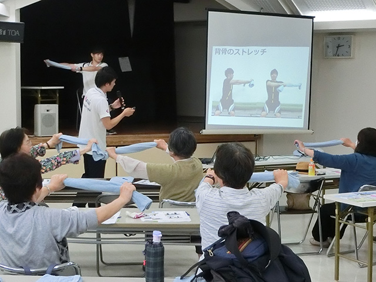
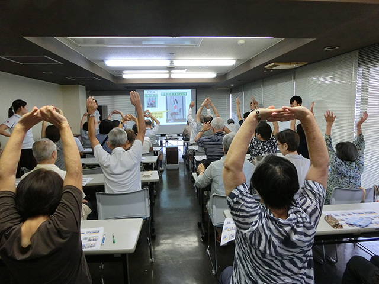

理念
医療法人社団青嶺会 松戸整形外科病院
副院長 / リハビリテーションセンター長
理学療法士 遊佐 隆
社会のリハビリテーションに対する期待は、年々高まっています。当院でも外来・入院患者さんの大半がリハビリテーションを行っております。当リハビリテーションセンターでは、患者さんが一日でも早く健全な生活が送られるよう知識と技能の向上に努め、『患者さん個々に適した最良のリハビリテーション』をご提供できるよう研鑚しております。
特徴としては、理学療法士と作業療法士が徒手療法と運動療法を積極的に取り入れており、患者さん個々の傷害（外傷・障害）特性やニーズに対応できるように丁寧なリハビリを心掛けております。
当院は千葉県内の整形外科専門病院としては、初めてリハビリテーション総合施設基準を取得しました。450㎡という広いリハビリ室で気持ちよくリハビリが出来るよう環境を整えております。更に、総外来数約550名という多くの患者さんに対応できるように、理学療法士と作業療法士を配し、治療の質の向上や待ち時間の短縮にも全力をあげております。
また、病院内の活動に留まらず、地域貢献の一環として「地域支援講習会」・「スポーツ支援講習会」などを定期的に開催しており、様々な活動を通して地域の皆さんが健康な生活を送れる手助けができればと考えております。
今後も日々積極的な診療業務にあたると共に、整形外科専門病院として最良のリハビリテーションをご提供出来るようスタッフ一同頑張ります。
リハビリテーションセンターの特色
患者さん個々に応じた高度なリハビリテーション医療の提供
「運動療法や徒手療法を駆使し、患者さんの個々に適した最良のリハビリテーションを提供する」を理念に掲げ、整形外科領域の専門職として、患者さんのお役に立てるよう日々知識・技術の研鑽に励んでおります。セラピストは担当制を設けており、患者さんが安心して一貫した治療が受けられるよう努めて参ります。また患者さん個々に丁寧に対応できるよう、各セラピストに治療用ベッド一台を配し、安心してリハビリを受けていただける環境をご提供しております。
研究活動による患者さんへの情報提供
各専門の医師と協力して研究活動を実施し、新たに得られた知見を患者さんに還元できるよう積極的に取り組んでおります。今後もより安全で、安心して受けていただけるリハビリを目指して情報提供して参ります。
実績紹介
周辺地域の皆さんへの社会貢献
我々は近隣の皆さんの健康増進を願い、定期的に地域支援講習会･スポーツ支援講習会を開催しております。活動を通して現在健康に過ごされている方々が、今後も変わらずに日常生活を送って頂けるよう、ご支援できればと考えております。
-

-

-

リハビリテーションの流れ
- 医師の診断の下、リハビリ適応患者さんに対してリハビリを開始致します。
- 患者さん個々に応じて、医師と協力して治療プログラムを作成します。
- 治療プログラムは、リハビリテーション総合実施計画書を毎月作成し、患者さんの状態の変化を確認しながら随時更新し実施致します。
- 標準的リハビリテーション実施期間である150日以内での症状改善を目指し、取り組んで参ります。
肩腱板断裂術後の装具着脱方法について
肩の術後装具の着脱動画です。
ご不明な点は、担当セラピストにご相談ください。
理学療法士の方へ
当院は日本理学療法士協会における認定理学療法士カリキュラム教育機関として認可されており、生涯学習制度（新人教育プログラム）の認定臨床指導施設となっております。
講習会または研修をご希望の方は、申し込みフォームよりお問い合わせください。
後ほど、担当者より連絡させていただきます。
お電話でのお問い合わせ
047-344-3171
受付時間
午前:8:20 - 11:30／午後:14:00 - 17:00
明るく元気に
お勤めできる方大歓迎！